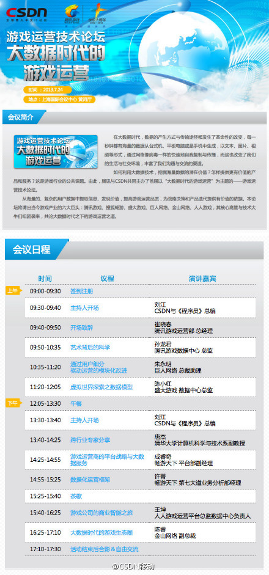

感觉讲师中分析数据的居多。//@刘江总编: 明天我将主持并到场学习。运营往往关乎游戏成败，其中奥妙相信对各种产品和社区用户的运营也有很大的启发意义。地址是上海国际会议中心。@CSDN移动:7月24日，首届#游戏运营技术论坛#，将以“大数据时代的游戏运营”为主题，在上海隆重举行。腾讯游戏、搜狐畅游、盛大游戏、巨人网络、金山网络、人人游戏，其核心高管与技术大牛，将共同探讨大数据时代之下的游戏运营之道。网页链接 
 网页链接
网页链接